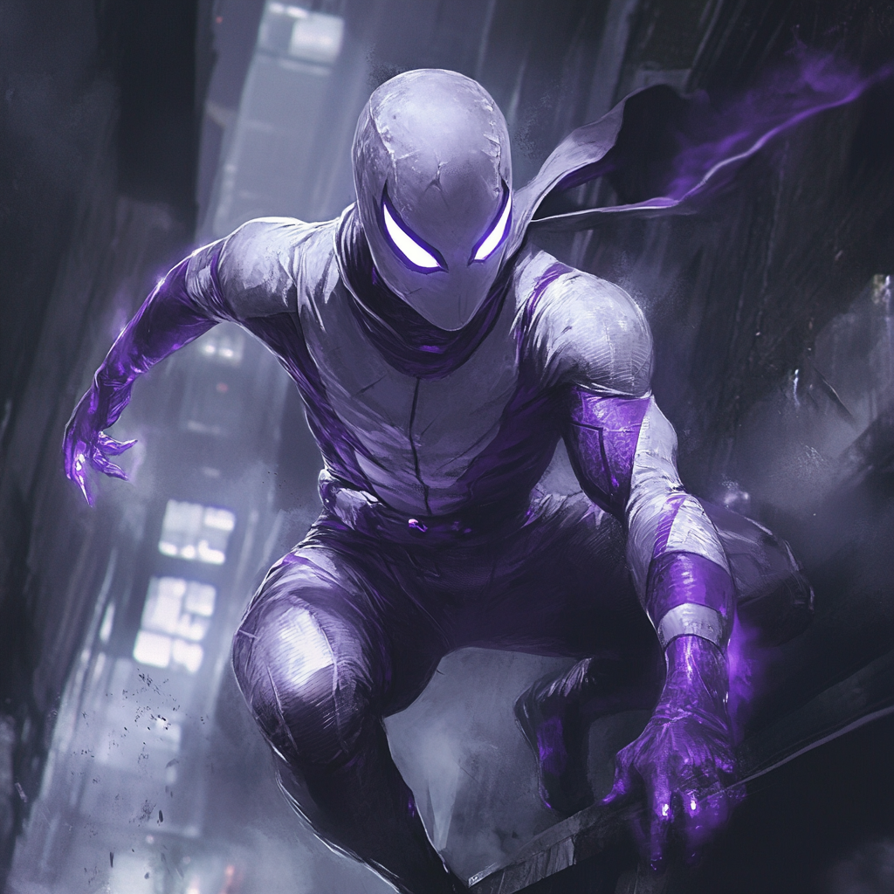

Mistwalker: Shadows of Valor

Echoes of the Past
The mist rolled in from Boston Harbor, blanketing Charlestown in a ghostly shroud as Indigo Hayes took his first breath on October 31, 1998. Born on Halloween, in a neighborhood steeped in Revolutionary War history, Indigo's arrival seemed touched by both the mystical and the historical. His mother, Evelyn Hayes, a dedicated nurse at Massachusetts General Hospital, raised him alone, his father having vanished into the fog of war long before Indigo's birth.
From an early age, Indigo was drawn to the whispers of history that echoed through Charlestown's cobblestone streets. He spent countless hours exploring the winding alleys and historic sites, his imagination painting vivid pictures of patriots and heroes long past. The Bunker Hill Monument stood as a silent sentinel over his childhood, a constant reminder of the sacrifices made for freedom.
Evelyn, despite working long shifts to make ends meet, always found time to nurture Indigo's curiosity. She regaled him with tales of their family's own revolutionary history—stories of Hayes ancestors who fought alongside colonial militias, their deeds etched into the very stones of Charlestown. These stories kindled a fierce pride and sense of duty in young Indigo.
As he grew, Indigo developed an uncanny ability to navigate the labyrinthine streets of his neighborhood, even in the thickest fog. This earned him the nickname "Mistwalker" among his friends, a moniker that would prove prophetic in years to come.
The Forge of War
At eighteen, driven by a sense of duty instilled by his upbringing and the weighty legacy of his forebears, Indigo enlisted in the United States Marine Corps. The transition from the historic streets of Charlestown to the grueling grounds of boot camp was jarring, but Indigo's determination saw him through.
During his training, Indigo formed deep bonds with fellow recruits Benjamin Hamm (Colorado), Danny Preston (Nevada), Willard Dawkins (Alabama), and Barton Palmer (Vermont). Together, they endured the physical and mental rigors of Marine Corps training, and their shared hardships forged an unbreakable camaraderie. These men became Indigo's brothers, providing the support he needed to persevere through even the most difficult challenges. Their friendship offered a grounding influence, reminding Indigo of his purpose and strengthening his resolve.
His natural agility, honed by years of parkour through Charlestown's urban landscape, caught the eye of his drill instructors. Combined with his sharp intellect and unwavering focus, these skills fast-tracked him to special operations training. Within two years, Indigo found himself in the elite Force Reconnaissance unit, undertaking missions that would never see the light of day in official reports.
Indigo operated in some of the world's most hostile environments for four years. From the sweltering jungles of Southeast Asia to the frigid mountains of Eastern Europe, he honed his skills in stealth, combat, and survival. His fellow Marines respected him not just for his prowess in the field but for his unshakeable moral compass. In a world of shifting allegiances and murky ethics, Indigo remained a beacon of integrity.
The Mist Descends
In late 2022, Indigo's life would change forever during a classified operation in Ethiopia. The country had been embroiled in the Tigray War since November 2020, a brutal civil conflict primarily fought in the Tigray Region between forces allied to the Ethiopian federal government and Eritrea against the Tigray People's Liberation Front (TPLF). The war had led to numerous war crimes, widespread rape, and even famine.
Indigo's team, including Benjamin, Danny, Willard, and Barton, was tasked with extracting a high-value target—a scientist who had been developing a controversial mutagenic compound. The mission was already fraught with danger, given the unstable situation in the region. However, things took a turn for the worse when members of the TPLF, eager to obtain the compound for themselves, ambushed Indigo's squad.
In the confusion, a containment tank in the facility was suddenly breached, sending shards of shrapnel flying through the air. Barton was struck in the head by a piece of shrapnel, resulting in a severe head injury that caused significant memory loss. Indigo, unaware of exactly how the tank had been breached, fought desperately to protect his comrades. Seeing Barton wounded left him with a deep sense of guilt.
Pinned down in an abandoned research facility, Indigo and his team fought desperately against overwhelming odds. As the battle raged, the containment unit shattered further, releasing a cloud of strange shimmering mist. Indigo, positioned closest to the unit, was engulfed in the strange vapor.
In that moment, as gunfire rained down around him, Indigo felt a surge of energy course through his body. The world seemed to slow, and he watched in disbelief as bullets passed harmlessly through him. Acting on instinct, he charged through a solid wall, emerging on the other side to flank their attackers.
The tide of battle turned, and Indigo's team emerged victorious. But the victory came at a cost. The classified nature of the mission meant that Indigo's newfound abilities had to remain a secret. The Marine Corps, wary of the unpredictable nature of what they assumed were mutant powers, quietly arranged for Indigo's honorable discharge.
At 25, Indigo found himself back in Charlestown, grappling with abilities he couldn't fully control or understand. The familiar streets now seemed alien, the mist that often shrouded the harbor a constant reminder of his transformation. He spent long hours by the waterfront trying to make sense of what he had become, all while carrying the weight of Barton's injury and the lingering sense of responsibility for his friend.
Shadows and Revelations
Indigo's return to civilian life was fraught with challenges. His ability to phase through solid matter, while extraordinary, was unpredictable. There were moments when he would involuntarily become intangible, passing through floors or walls at inopportune times. This made maintaining a normal job or relationship nearly impossible.
Isolated and struggling, Indigo began to use his abilities to help others in secret. He would phase into burning buildings to rescue trapped occupants or slip past locked doors to foil burglaries. The local press began to report sightings of a mysterious "ghost" hero, adding to the rich tapestry of Charlestown's legends.
It was during one of these clandestine acts of heroism that Indigo's life took another turn. While phasing into a warehouse to disrupt a weapons smuggling operation, he came face to face with Natasha Romanoff—the Black Widow. She had been tracking the same criminal network and was surprised to find a local hero had beaten her to the punch.
Impressed by Indigo's skills and touched by his desire to help others despite his personal struggles, Natasha saw potential where others might see a liability. She revealed to Indigo the existence of the Boston Avengers Academy (BAA) and extended an invitation to join.
The Academy's Embrace
In late 2023, Indigo stepped through the doors of J. Adams Consulting Services, descending into the hidden world of the BAA. The academy offered not just training but a community of individuals grappling with extraordinary abilities and the weight of heroic responsibility.
The six-month program was intense, pushing Indigo to his limits and beyond. Courses like "Superhero Ethics: Being Heroic" forced him to confront the moral complexities of using his powers in a world often painted in shades of gray. "Exploring Your Super Powers" helped him gain finer control over his phasing abilities, teaching him to extend his intangibility to others and even to selectively phase parts of his body.
Under the tutelage of Falcon, Indigo honed his tactical skills, learning to integrate his military experience with his new powers. Hawkeye taught him the value of precision and timing, skills crucial for a hero whose abilities relied on split-second decisions. Speedball, with his kinetic energy manipulation, helped Indigo understand the physics behind his phasing, leading to breakthroughs in control and application.
But it was the course on "The Legal System: Vigilantes & the Law" that truly opened Indigo's eyes to the complexities of superheroism. He grappled with questions of jurisdiction, the limits of heroic intervention, and the fine line between vigilantism and sanctioned peacekeeping.
Trials of the Mistwalker
As Indigo progressed through the academy, he faced numerous challenges that tested not just his powers, but his character. The Danger Room scenarios pushed him to his limits, simulating complex situations that required both his physical abilities and his strategic mind.
One particularly grueling simulation placed Indigo in a hostage situation within a structurally unsound building. He had to phase through walls to gather intelligence, neutralize threats without endangering hostages, and evacuate civilians before the building collapsed. The scenario forced him to balance the use of his powers with the need for discretion and the safety of innocents.
Another pivotal moment came during a joint training exercise with other BAA students. Paired with a teammate whose energy projection powers were volatile and difficult to control, Indigo had to learn to trust not just his own abilities but those of his fellow heroes. The exercise ended with Indigo using his phasing powers to protect his teammate from their own out-of-control energy blast, a moment that solidified his role as both a protector and a team player.
Throughout his training, Indigo also worked closely with the academy's scientific division to understand the true nature of his powers. It was discovered that his abilities stemmed from a unique interaction between his latent mutant gene and the mutagenic compound he was exposed to in Africa. This hybrid origin explained the unusual manifestation of his powers and opened up new avenues for their development.
The Crucible
As Indigo's training neared its end, he faced his greatest challenge yet. A real-world crisis erupted in Boston Harbor—a terrorist group had seized control of a cruise ship, threatening to detonate a dirty bomb that would render the harbor uninhabitable for decades.
The Avengers, engaged in a global crisis elsewhere, called upon the BAA's top students to handle the situation. Indigo, now fully embracing his codename Mistwalker, was tasked with leading a small team to infiltrate the ship, disable the bomb, and rescue the hostages.
Using his phasing abilities, Mistwalker slipped aboard the ship undetected, gathering crucial intelligence on the terrorists' positions and the location of the bomb. He then coordinated with his team, using his military experience and BAA training to formulate a daring plan.
The operation was a symphony of superhuman abilities and tactical precision. Mistwalker phased through the ship's hull to scout the situation, then returned to guide his team to a vulnerable access point he had discovered. While his tech-savvy teammate worked to disarm the bomb, Mistwalker engaged the terrorists, his intangibility making him an impossible target.
The mission's climax came as the timer on the bomb ticked down. Mistwalker provided crucial cover, phasing in and out to distract and confuse the terrorists, buying precious seconds for his teammate. With moments to spare, the bomb was successfully disarmed, averting catastrophe and saving countless lives.
A Hero Emerges
The successful resolution of the harbor crisis marked Mistwalker's transition from student to hero. At the BAA graduation ceremony, he stood tall in his new suit—a marvel of engineering designed to work in tandem with his phasing abilities. The sleek, dark gray outfit was adorned with patterns reminiscent of swirling mist, with a cowl that could obscure his features when needed.
As he accepted his Avengers identification card, marking him as a Probationary Avenger, Mistwalker reflected on the journey that had brought him to this point. From the mist-shrouded streets of Charlestown to the battlefields of foreign lands and now to the ranks of Earth's mightiest heroes, Indigo Hayes had found his true calling.
The Mist Rises
Today, Mistwalker stands as a guardian of Boston, a protector who moves between the shadows of the city's historic streets and the gleaming towers of its future. His ability to phase through solid matter, combined with his tactical acumen and unwavering moral compass, makes him a unique and formidable hero.
Indigo splits his time between active duty as a Probationary Avenger and mentoring new recruits at the BAA. He's become particularly adept at helping other heroes with hybrid or unusual power origins, drawing from his own experiences to guide them.
The mist that once represented Indigo's uncertainty has become his ally, a symbol of his ability to move between worlds—the tangible and intangible, the past and the present, the ordinary and the extraordinary. As Mistwalker, Indigo Hayes embodies the spirit of Boston itself—steeped in history yet always pushing forward, a beacon of resilience and hope in an ever-changing world.
Yet, even as he embraces his role as a hero, Indigo knows that greater challenges lie ahead. The true nature of the mutagenic compound that awakened his latent x-gene remains a mystery, and whispers of other enhanced individuals created by similar means have reached his ears. Moreover, the terrorist group from the harbor incident seems to be part of a larger, more insidious organization with roots that run deep into Boston's criminal underworld.
As the mist rolls in from the harbor each night, Mistwalker stands ready, a silent guardian prepared to face whatever threats may emerge from the shadows. For in the haze between the seen and unseen, between history and destiny, Indigo Hayes has found his true purpose—a hero forged in mist and shadow, dedicated to protecting the city and people he holds dear.